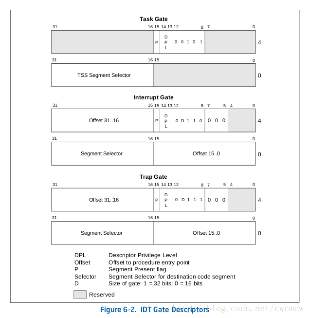
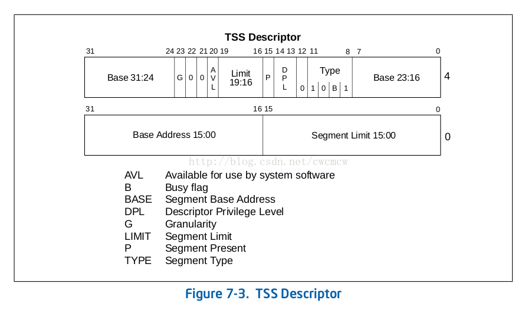

介绍
#
- GDT，IDT都是全局的。LDT是局部的（在GDT中有它的描述符）
- GDT用来存储描述符（门或非门）；系统中几个CPU,就有几个GDT
- IDT整个系统只有一个
- 系统启动时候需要初始化GDT和IDT。LDT和进程相关，并不一定必有
- TSS: Task-State Segment，任务状态段，保存任务状态信息的系统段
- TSS只能存在于GDT中
- Task-Gate Descriptor，任务门描述符，用来间接的宝玉引用任务。可以放到GDT、LDT、IDT中，里面的TSS段选择指向GDT的TSS描述符
1. 相关结构的cpu手册
#



一、数据结构
#
1// arch/x86/include/asm/desc_defs.h
2// gdt结构
3/* 8 byte segment descriptor */
4struct desc_struct {
5 u16 limit0; // 段管理的内存上限low
6 u16 base0; // 段的对应的内存实际地址low
7 u16 base1 : 8; // 段的对应的内存实际地址mid
8 u16 type : 4;
9 u16 s : 1; // 系统段为1，普通段为0
10 u16 dpl : 2;
11 u16 p : 1;
12 u16 limit1 : 4; // 段管理的内存上限low
13 u16 avl : 1;
14 u16 l : 1;
15 u16 d : 1;
16 u16 g : 1; // 为1就是4K为单位定义上限（上限1，管理内存4K），为0则以一个字节为单位
17 u16 base2 : 8; // 段的对应的内存实际地址high
18} __attribute__((packed));
19
20#define GDT_ENTRY_INIT(flags, base, limit) \
21 { \
22 .limit0 = (u16) (limit), \
23 .limit1 = ((limit) >> 16) & 0x0F, \
24 .base0 = (u16) (base), \
25 .base1 = ((base) >> 16) & 0xFF, \
26 .base2 = ((base) >> 24) & 0xFF, \
27 .type = (flags & 0x0f), \
28 .s = (flags >> 4) & 0x01, \
29 .dpl = (flags >> 5) & 0x03, \
30 .p = (flags >> 7) & 0x01, \
31 .avl = (flags >> 12) & 0x01, \
32 .l = (flags >> 13) & 0x01, \
33 .d = (flags >> 14) & 0x01, \
34 .g = (flags >> 15) & 0x01, \
35 }
36
37enum {
38 GATE_INTERRUPT = 0xE,
39 GATE_TRAP = 0xF,
40 GATE_CALL = 0xC,
41 GATE_TASK = 0x5,
42};
43
44enum {
45 DESC_TSS = 0x9,
46 DESC_LDT = 0x2,
47 DESCTYPE_S = 0x10, /* !system */
48};
49
50/* LDT or TSS descriptor in the GDT. */
51struct ldttss_desc {
52 u16 limit0;
53 u16 base0;
54
55 u16 base1 : 8, type : 5, dpl : 2, p : 1;
56 u16 limit1 : 4, zero0 : 3, g : 1, base2 : 8;
57#ifdef CONFIG_X86_64
58 u32 base3;
59 u32 zero1;
60#endif
61} __attribute__((packed));
62
63typedef struct ldttss_desc ldt_desc;
64typedef struct ldttss_desc tss_desc;
65
66struct idt_bits {
67 u16 ist : 3;
68 u16 zero : 5;
69 u16 type : 5;
70 u16 dpl : 2; // Descriptor Privilege Level
71 u16 p : 1;
72} __attribute__((packed));
73
74struct idt_data {
75 unsigned int vector;
76 unsigned int segment;
77 struct idt_bits bits;
78 const void *addr;
79};
80
81// idt结构
82struct gate_struct {
83 u16 offset_low; // 函数在段内的偏移地址low
84 u16 segment; // 段配置对应的偏移，比如第2号段，就是 2 * 8，一个段配置8个字节
85 struct idt_bits bits;
86 u16 offset_middle; // 函数在段内的偏移地址mid
87#ifdef CONFIG_X86_64
88 u32 offset_high;
89 u32 reserved;
90#endif
91} __attribute__((packed));
92
93typedef struct gate_struct gate_desc;
94
95...
96
97#endif /* !__ASSEMBLY__ */
98
99/* Boot IDT definitions */
100#define BOOT_IDT_ENTRIES 32
二、配置
#
1. GDT分布配置，每个cpu都有一个
#
1// arch/x86/include/asm/segment.h
2/*
3 * Number of entries in the GDT table:
4 */
5#define GDT_ENTRIES 32
6
7// arch/x86/include/asm/desc.h
8struct gdt_page {
9 struct desc_struct gdt[GDT_ENTRIES];
10} __attribute__((aligned(PAGE_SIZE)));
11
12// arch/x86/kernel/cpu/common.c
13DEFINE_PER_CPU_PAGE_ALIGNED(struct gdt_page, gdt_page) = { .gdt = {
14#ifdef CONFIG_X86_64
15 /*
16 * We need valid kernel segments for data and code in long mode too
17 * IRET will check the segment types kkeil 2000/10/28
18 * Also sysret mandates a special GDT layout
19 *
20 * TLS descriptors are currently at a different place compared to i386.
21 * Hopefully nobody expects them at a fixed place (Wine?)
22 */
23 [GDT_ENTRY_KERNEL32_CS] = GDT_ENTRY_INIT(0xc09b, 0, 0xfffff),
24 [GDT_ENTRY_KERNEL_CS] = GDT_ENTRY_INIT(0xa09b, 0, 0xfffff), // kernel代码段
25 [GDT_ENTRY_KERNEL_DS] = GDT_ENTRY_INIT(0xc093, 0, 0xfffff), // kernel数据段
26 [GDT_ENTRY_DEFAULT_USER32_CS] = GDT_ENTRY_INIT(0xc0fb, 0, 0xfffff),
27 [GDT_ENTRY_DEFAULT_USER_DS] = GDT_ENTRY_INIT(0xc0f3, 0, 0xfffff),
28 [GDT_ENTRY_DEFAULT_USER_CS] = GDT_ENTRY_INIT(0xa0fb, 0, 0xfffff),
29#else
30 [GDT_ENTRY_KERNEL_CS] = GDT_ENTRY_INIT(0xc09a, 0, 0xfffff), // kernel代码段
31 [GDT_ENTRY_KERNEL_DS] = GDT_ENTRY_INIT(0xc092, 0, 0xfffff), // kernel数据段
32 [GDT_ENTRY_DEFAULT_USER_CS] = GDT_ENTRY_INIT(0xc0fa, 0, 0xfffff),
33 [GDT_ENTRY_DEFAULT_USER_DS] = GDT_ENTRY_INIT(0xc0f2, 0, 0xfffff),
34 /*
35 * Segments used for calling PnP BIOS have byte granularity.
36 * They code segments and data segments have fixed 64k limits,
37 * the transfer segment sizes are set at run time.
38 */
39 /* 32-bit code */
40 [GDT_ENTRY_PNPBIOS_CS32] = GDT_ENTRY_INIT(0x409a, 0, 0xffff),
41 /* 16-bit code */
42 [GDT_ENTRY_PNPBIOS_CS16] = GDT_ENTRY_INIT(0x009a, 0, 0xffff),
43 /* 16-bit data */
44 [GDT_ENTRY_PNPBIOS_DS] = GDT_ENTRY_INIT(0x0092, 0, 0xffff),
45 /* 16-bit data */
46 [GDT_ENTRY_PNPBIOS_TS1] = GDT_ENTRY_INIT(0x0092, 0, 0),
47 /* 16-bit data */
48 [GDT_ENTRY_PNPBIOS_TS2] = GDT_ENTRY_INIT(0x0092, 0, 0),
49 /*
50 * The APM segments have byte granularity and their bases
51 * are set at run time. All have 64k limits.
52 */
53 /* 32-bit code */
54 [GDT_ENTRY_APMBIOS_BASE] = GDT_ENTRY_INIT(0x409a, 0, 0xffff),
55 /* 16-bit code */
56 [GDT_ENTRY_APMBIOS_BASE+1] = GDT_ENTRY_INIT(0x009a, 0, 0xffff),
57 /* data */
58 [GDT_ENTRY_APMBIOS_BASE+2] = GDT_ENTRY_INIT(0x4092, 0, 0xffff),
59
60 [GDT_ENTRY_ESPFIX_SS] = GDT_ENTRY_INIT(0xc092, 0, 0xfffff),
61 [GDT_ENTRY_PERCPU] = GDT_ENTRY_INIT(0xc092, 0, 0xfffff),
62#endif
63} };
64EXPORT_PER_CPU_SYMBOL_GPL(gdt_page);
1#ifdef CONFIG_X86_32
2// arch/x86/include/asm/segment.h
3/*
4 * The layout of the per-CPU GDT under Linux:
5 *
6 * 0 - null <=== cacheline #1
7 * 1 - reserved
8 * 2 - reserved
9 * 3 - reserved
10 *
11 * 4 - unused <=== cacheline #2
12 * 5 - unused
13 *
14 * ------- start of TLS (Thread-Local Storage) segments:
15 *
16 * 6 - TLS segment #1 [ glibc's TLS segment ]
17 * 7 - TLS segment #2 [ Wine's %fs Win32 segment ]
18 * 8 - TLS segment #3 <=== cacheline #3
19 * 9 - reserved
20 * 10 - reserved
21 * 11 - reserved
22 *
23 * ------- start of kernel segments:
24 *
25 * 12 - kernel code segment <=== cacheline #4
26 * 13 - kernel data segment
27 * 14 - default user CS
28 * 15 - default user DS
29 * 16 - TSS <=== cacheline #5
30 * 17 - LDT
31 * 18 - PNPBIOS support (16->32 gate)
32 * 19 - PNPBIOS support
33 * 20 - PNPBIOS support <=== cacheline #6
34 * 21 - PNPBIOS support
35 * 22 - PNPBIOS support
36 * 23 - APM BIOS support
37 * 24 - APM BIOS support <=== cacheline #7
38 * 25 - APM BIOS support
39 *
40 * 26 - ESPFIX small SS
41 * 27 - per-cpu [ offset to per-cpu data area ]
42 * 28 - unused
43 * 29 - unused
44 * 30 - unused
45 * 31 - TSS for double fault handler
46 */
47#define GDT_ENTRY_TLS_MIN 6
48#define GDT_ENTRY_TLS_MAX (GDT_ENTRY_TLS_MIN + GDT_ENTRY_TLS_ENTRIES - 1)
49
50#define GDT_ENTRY_KERNEL_CS 12
51#define GDT_ENTRY_KERNEL_DS 13
52#define GDT_ENTRY_DEFAULT_USER_CS 14
53#define GDT_ENTRY_DEFAULT_USER_DS 15
54#define GDT_ENTRY_TSS 16
55#define GDT_ENTRY_LDT 17
56#define GDT_ENTRY_PNPBIOS_CS32 18
57#define GDT_ENTRY_PNPBIOS_CS16 19
58#define GDT_ENTRY_PNPBIOS_DS 20
59#define GDT_ENTRY_PNPBIOS_TS1 21
60#define GDT_ENTRY_PNPBIOS_TS2 22
61#define GDT_ENTRY_APMBIOS_BASE 23
62
63#define GDT_ENTRY_ESPFIX_SS 26
64#define GDT_ENTRY_PERCPU 27
65
66#define GDT_ENTRY_DOUBLEFAULT_TSS 31
67
68/*
69 * Number of entries in the GDT table:
70 */
71#define GDT_ENTRIES 32
72
73/*
74 * Segment selector values corresponding to the above entries:
75 */
76
77#define __KERNEL_CS (GDT_ENTRY_KERNEL_CS*8)
78#define __KERNEL_DS (GDT_ENTRY_KERNEL_DS*8)
79#define __USER_DS (GDT_ENTRY_DEFAULT_USER_DS*8 + 3)
80#define __USER_CS (GDT_ENTRY_DEFAULT_USER_CS*8 + 3)
81#define __ESPFIX_SS (GDT_ENTRY_ESPFIX_SS*8)
82
83/* segment for calling fn: */
84#define PNP_CS32 (GDT_ENTRY_PNPBIOS_CS32*8)
85/* code segment for BIOS: */
86#define PNP_CS16 (GDT_ENTRY_PNPBIOS_CS16*8)
87
88/* "Is this PNP code selector (PNP_CS32 or PNP_CS16)?" */
89#define SEGMENT_IS_PNP_CODE(x) (((x) & 0xf4) == PNP_CS32)
90
91/* data segment for BIOS: */
92#define PNP_DS (GDT_ENTRY_PNPBIOS_DS*8)
93/* transfer data segment: */
94#define PNP_TS1 (GDT_ENTRY_PNPBIOS_TS1*8)
95/* another data segment: */
96#define PNP_TS2 (GDT_ENTRY_PNPBIOS_TS2*8)
97
98#ifdef CONFIG_SMP
99# define __KERNEL_PERCPU (GDT_ENTRY_PERCPU*8)
100#else
101# define __KERNEL_PERCPU 0
102#endif
103
104#else /* 64-bit: */
105
106#include <asm/cache.h>
107
108#define GDT_ENTRY_KERNEL32_CS 1
109#define GDT_ENTRY_KERNEL_CS 2
110#define GDT_ENTRY_KERNEL_DS 3
111
112/*
113 * We cannot use the same code segment descriptor for user and kernel mode,
114 * not even in long flat mode, because of different DPL.
115 *
116 * GDT layout to get 64-bit SYSCALL/SYSRET support right. SYSRET hardcodes
117 * selectors:
118 *
119 * if returning to 32-bit userspace: cs = STAR.SYSRET_CS,
120 * if returning to 64-bit userspace: cs = STAR.SYSRET_CS+16,
121 *
122 * ss = STAR.SYSRET_CS+8 (in either case)
123 *
124 * thus USER_DS should be between 32-bit and 64-bit code selectors:
125 */
126#define GDT_ENTRY_DEFAULT_USER32_CS 4
127#define GDT_ENTRY_DEFAULT_USER_DS 5
128#define GDT_ENTRY_DEFAULT_USER_CS 6
129
130/* Needs two entries */
131#define GDT_ENTRY_TSS 8
132/* Needs two entries */
133#define GDT_ENTRY_LDT 10
134
135#define GDT_ENTRY_TLS_MIN 12
136#define GDT_ENTRY_TLS_MAX 14
137
138#define GDT_ENTRY_CPUNODE 15
139
140/*
141 * Number of entries in the GDT table:
142 */
143#define GDT_ENTRIES 16
144
145/*
146 * Segment selector values corresponding to the above entries:
147 *
148 * Note, selectors also need to have a correct RPL,
149 * expressed with the +3 value for user-space selectors:
150 */
151#define __KERNEL32_CS (GDT_ENTRY_KERNEL32_CS*8)
152#define __KERNEL_CS (GDT_ENTRY_KERNEL_CS*8)
153#define __KERNEL_DS (GDT_ENTRY_KERNEL_DS*8)
154#define __USER32_CS (GDT_ENTRY_DEFAULT_USER32_CS*8 + 3)
155#define __USER_DS (GDT_ENTRY_DEFAULT_USER_DS*8 + 3)
156#define __USER32_DS __USER_DS
157#define __USER_CS (GDT_ENTRY_DEFAULT_USER_CS*8 + 3)
158#define __CPUNODE_SEG (GDT_ENTRY_CPUNODE*8 + 3)
159
160#endif
2. IDT分布配置
#
1// arch/x86/kernel/idt.c
2/*
3 * The default IDT entries which are set up in trap_init() before
4 * cpu_init() is invoked. Interrupt stacks cannot be used at that point and
5 * the traps which use them are reinitialized with IST after cpu_init() has
6 * set up TSS.
7 */
8static const __initconst struct idt_data def_idts[] = {
9 INTG(X86_TRAP_DE, asm_exc_divide_error),
10 ISTG(X86_TRAP_NMI, asm_exc_nmi, IST_INDEX_NMI),
11 INTG(X86_TRAP_BR, asm_exc_bounds),
12 INTG(X86_TRAP_UD, asm_exc_invalid_op),
13 INTG(X86_TRAP_NM, asm_exc_device_not_available),
14 INTG(X86_TRAP_OLD_MF, asm_exc_coproc_segment_overrun),
15 INTG(X86_TRAP_TS, asm_exc_invalid_tss),
16 INTG(X86_TRAP_NP, asm_exc_segment_not_present),
17 INTG(X86_TRAP_SS, asm_exc_stack_segment),
18 INTG(X86_TRAP_GP, asm_exc_general_protection),
19 INTG(X86_TRAP_SPURIOUS, asm_exc_spurious_interrupt_bug),
20 INTG(X86_TRAP_MF, asm_exc_coprocessor_error),
21 INTG(X86_TRAP_AC, asm_exc_alignment_check),
22 INTG(X86_TRAP_XF, asm_exc_simd_coprocessor_error),
23
24#ifdef CONFIG_X86_32
25 TSKG(X86_TRAP_DF, GDT_ENTRY_DOUBLEFAULT_TSS),
26#else
27 ISTG(X86_TRAP_DF, asm_exc_double_fault, IST_INDEX_DF),
28#endif
29 ISTG(X86_TRAP_DB, asm_exc_debug, IST_INDEX_DB),
30
31#ifdef CONFIG_X86_MCE
32 ISTG(X86_TRAP_MC, asm_exc_machine_check, IST_INDEX_MCE),
33#endif
34
35#ifdef CONFIG_X86_KERNEL_IBT
36 INTG(X86_TRAP_CP, asm_exc_control_protection),
37#endif
38
39#ifdef CONFIG_AMD_MEM_ENCRYPT
40 ISTG(X86_TRAP_VC, asm_exc_vmm_communication, IST_INDEX_VC),
41#endif
42
43 SYSG(X86_TRAP_OF, asm_exc_overflow),
44#if defined(CONFIG_IA32_EMULATION)
45 SYSG(IA32_SYSCALL_VECTOR, entry_INT80_compat),
46#elif defined(CONFIG_X86_32)
47 SYSG(IA32_SYSCALL_VECTOR, entry_INT80_32),
48#endif
49};